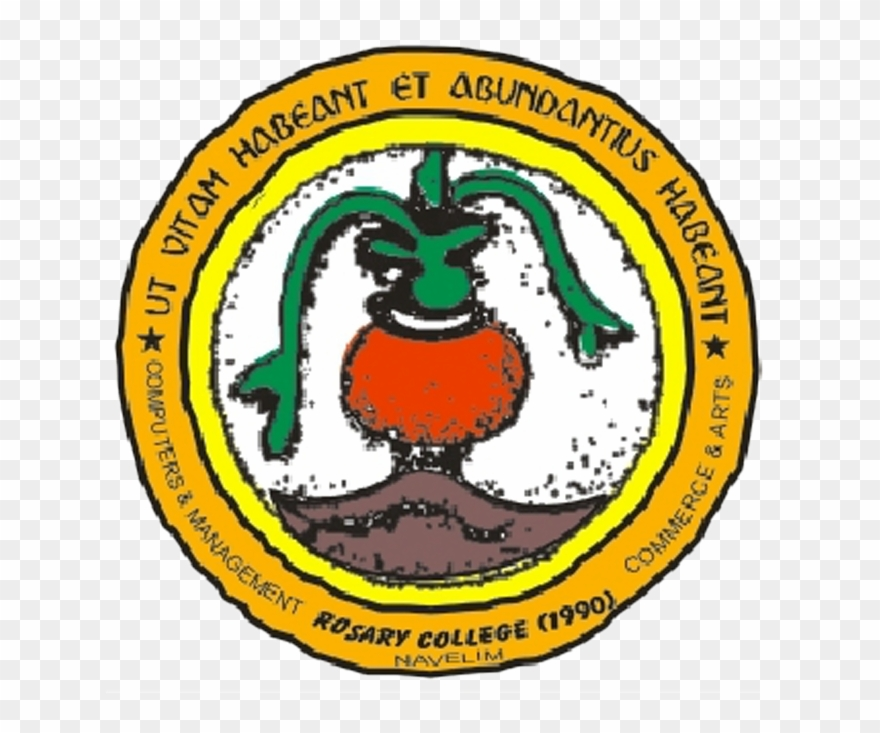

Invited Talks

Invited speaker in workshop titled "Deep Learning: Perspectives, Trends AND Research Prospects" organized by Department of Computer Applications, Rosary College of Commerce and Arts, Goa.
January, 2020
Invited speaker in workshop titled "Hands on Introduction to Deep Learning using Tensorflow" organized by IEEE-IISc branch in Indian Institute of Science (IISc), Bangalore.
January, 2019
Invited speaker in workshop titled "Introduction to Machine Learning using Tensorflow" organized by IEEE-IISc branch in Indian Institute of Science (IISc), Bangalore.